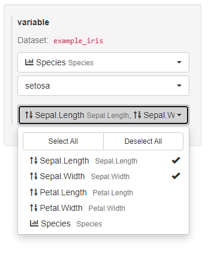
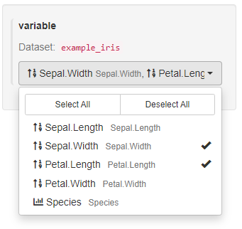
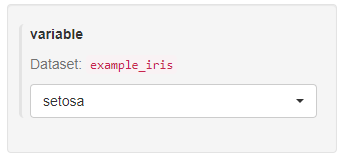
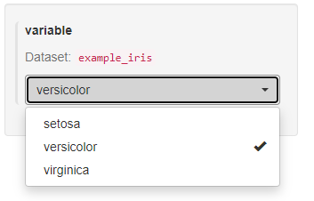
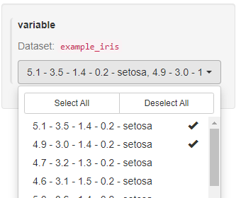
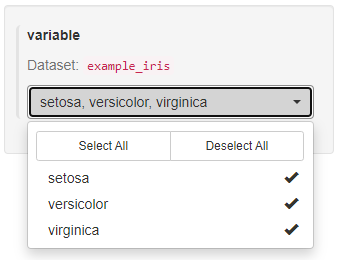

Customizing UI with
data_extract_spec
Konrad Pagacz
2021-12-14
data_extract_spec.RmdMotivation
There are times when an app developer wants to showcase more than
just one fixed slice of their dataset in their hand-crafted module.
Relinquishing control of the application to a user demands the developer
gives their users a degree of freedom. In case of analyzing data,
teal allows app developers to open up their applications to
users, letting them decide exactly what app data to analyze in the
module. One of the simplest example can be: given the well-known
R dataset iris and a module that shows a
histogram of a variable, the app developer wants to let the user specify
which variable should be shown on the histogram. This vignette covers
this and some more complex use cases of
data_extract_spec.
A lot of teal modules use data_extract_spec
objects to tackle user input. You can find many examples in
e.g. teal.modules.general and
teal.modules.clinical.
This vignette describes data_extract_spec objects, their
constructors, parameters, use cases and their intended life-cycle.
Piece of a puzzle
data_extract_spec’s task is two-fold: create a UI
component in a shiny application and pass the user input
from the UI to the module itself. Having that formulated, let’s have a
look at how it supports both its responsibilities.
Example module
In order to showcase different initialization options of
data_extract_spec, first we define a teal
module which accepts a data_extract_spec object. Let’s
define a simple module and since this section focuses mostly on
data_extract_spec, it skips the detailed explanation of the
code. You can find more about developing a module using
data_extract_spec in the section below.
library(teal)
#> Loading required package: shiny
#>
#> You are using teal version 0.10.1.9018
library(magrittr)
#' A new awesome module
#'
#' @param variable `data_extract_spec` object defining a slice of data
#'
awesome_module <- function(label = "Awesome Module", variable) {
module(
label = label,
server = awesome_srv,
ui = awesome_ui,
ui_args = list(variable),
server_args = list(variable = variable),
filters = "all"
)
}
awesome_ui <- function(id, datasets, variable) {
ns <- shiny::NS(id)
teal.widgets::standard_layout(
output = teal.widgets::white_small_well(
shiny::plotOutput(ns("histogram"))
),
encoding = shiny::div(teal.transform::data_extract_ui(ns("variable"), label = "variable", variable))
)
}
awesome_srv <- function(id, datasets, variable) {
moduleServer(id, function(input, output, session) {
# teal.transform::data_merge_module is a way of combining the `data_extract_spec` objects
# and producing appropriate slices of data
merged_data <- teal.transform::data_merge_module(data_extract = list(variable = variable), datasets = datasets)
output$histogram <- shiny::renderPlot({
req(merged_data()$data()[[1]])
validate(need(is.numeric(merged_data()$data()[[1]]), "Please select numeric column"))
hist(merged_data()$data()[[1]])
})
})
}The simplest UI data_extract_spec
The simplest way to instantiate a data_extract_spec is
to call it with the dataname argument:
simple_data_extract_spec <- teal.transform::data_extract_spec(dataname = "example_iris")When passed to awesome_module,
simple_data_extract_spec will create two sections on the
left-hand side of the application. One for filtering
data and one for selecting variables.
app <- init(data = data, modules = list(awesome_module(variable = simple_data_extract_spec)))
shiny::shinyApp(app$ui, app$server)Notice the data_extract_spec object created earlier is
passed to the variable parameter of
awesome_module.
 The filtering and selecting works similarly to
The filtering and selecting works similarly to dplyr’s
functions of the same name (dplyr::filter,
dplyr::select).
Users can craft the filtering condition choosing the variable and its
values. The records matching the condition are included in the slice
passed to the module. Analogous to dplyr::select, users can
also specify which variables from the data should be selected and passed
to the module. In the picture below, the user selected the column
Sepal.Length and chose records from the data with value
setosa of the variable Species. The resulting
histogram shows the data from the defined slice of the original
data.frame.

The UI created using the simplest constructor of
data_extract_spec allows choosing a single variable for
filtering and multiple variables for selection.

In the case of awesome_module, the module only uses one
variable to plot the histogram anyway, so it makes little sense to allow
passing two of them. Moreover, the developer of
awesome_module might want to allow filtering on more than
one variable only. Both of these use cases are not covered by the UI
created in this example using the simplest
data_extract_spec constructor, but they are possible using
other parameters of data_extract_spec.
Modifications of UI using data_extract_spec
data_extract_spec supports refined control over the UI
elements for filtering and selection via the parameters
filter and select accepting
filter_spec and select_spec objects
respectively. The overall syntax looks like this:
data_extract_spec(dataname = "name of the dataset", filter = <filter_spec definition>, select = <select_spec definition>)The following examples all define a custom_des, which
can be passed as the module argument:
app <- init(data = data, modules = list(awesome_module(variable = custom_des)))
shiny::shinyApp(app$ui, app$server)Modify the variable selection input
The select parameter of data_extract_spec
expects a select_spec object passed to it.
select_spec’s constructor offers a range of customizations
of the UI inputs.
- Show all variables in the drop-down menu.
custom_des <- teal.transform::data_extract_spec(
dataname = "example_iris",
select = teal.transform::select_spec(choices = teal.transform::variable_choices("example_iris"))
)
- Pre-select a set of variables in the drop-down menu.
custom_des <- teal.transform::data_extract_spec(
dataname = "example_iris",
select = teal.transform::select_spec(
choices = teal.transform::variable_choices("example_iris"), selected = "Sepal.Width"
)
)
- Allow choosing more than one variable. This option is managed by the
multipleparameter offilter_spec. WhenFALSEit’s not possible to choose multiple variables from the drop-down menu. By default, it is set toFALSEif only a single variable is passed to selected and it is set toTRUEif an array of variables is passed toselected.
custom_des <- teal.transform::data_extract_spec(
dataname = "example_iris",
select = teal.transform::select_spec(
choices = teal.transform::variable_choices("example_iris"),
selected = "Sepal.Width",
multiple = TRUE
)
)
- Forbid making any changes to the pre-selected variable. This option
is governed by the
fixedparameter. By default, it’sFALSE, allowing the application users to make changes to the selection.
custom_des <- teal.transform::data_extract_spec(
dataname = "example_iris",
select = teal.transform::select_spec(
choices = teal.transform::variable_choices("example_iris"), selected = "Sepal.Width", fixed = TRUE
)
)
Modify the filtering inputs
The filter parameter of data_extract_spec
expects a filter_spec object passed to it.
filter_spec’s constructor offers a range of customizations
of the UI inputs.
- Change the set of variables available to the user in the filtering UI.
custom_des <- teal.transform::data_extract_spec(
dataname = "example_iris",
filter = teal.transform::filter_spec(vars = c("Species"))
)As a result, the application user can only choose between values of
the Species variable. Notice as well that the created UI
panel does not have any label.

- Add a label to the filtering UI.
custom_des <- teal.transform::data_extract_spec(
dataname = "example_iris",
filter = teal.transform::filter_spec(vars = c("Species"), label = "Species var")
)Notice the new label Species var at the top of the
drop-down menu.

- Change the set of variables available filtered by in the UI to all variables from a dataset.
custom_des <- teal.transform::data_extract_spec(
dataname = "example_iris",
filter = teal.transform::filter_spec(vars = variable_choices("example_iris"))
) Notice that only one choice from the drop-down menu can be active at any
given time.
Notice that only one choice from the drop-down menu can be active at any
given time.
- Change the set of choices of values available to the user in the UI.
custom_des <- teal.transform::data_extract_spec(
dataname = "example_iris",
filter = teal.transform::filter_spec(vars = "Species", choices = c("Setosa"))
)
- Set the available choices to all possible values of a variable.
custom_des <- teal.transform::data_extract_spec(
dataname = "example_iris",
filter = teal.transform::filter_spec(
vars = "Species", choices = teal.transform::value_choices("example_iris", "Species")
)
)
- Pre-select a choice for a user (this will be the starting value in the UI, but it can be changed by the user later).
custom_des <- teal.transform::data_extract_spec(
dataname = "example_iris",
filter = teal.transform::filter_spec(
vars = "Species",
choices = teal.transform::value_choices("example_iris", "Species"),
selected = c("versicolor")
)
)
- Allow multiple values of the chosen variables to be selected in the
filtering UI. By default,
filter_speccreates a UI where only one value from the cartesian product of all values present in the chosen variables can be selected at a time. To allow for multiple values, set the parametermultipletoTRUE.
custom_des <- teal.transform::data_extract_spec(
dataname = "example_iris",
filter = teal.transform::filter_spec(vars = teal.transform::variable_choices("example_iris"), multiple = TRUE)
)
- Pre-select all possible values of the chosen variables in the UI (possible to change it by the user later).
custom_des <- teal.transform::data_extract_spec(
dataname = "example_iris",
filter = teal.transform::filter_spec(
vars = "Species",
choices = teal.transform::value_choices("example_iris", "Species"),
selected = teal.transform::all_choices()
)
)
Notice that contrary to the basic example of
data_extract_spec shown in the section
The simplest use... all of the previous UIs did not allow
to change the variables for filtering, only values.
- Allow users to select a variable used for filtering.
custom_des <- teal.transform::data_extract_spec(
dataname = "example_iris",
filter = teal.transform::filter_spec(
vars = teal.transform::choices_selected(
choices = teal.transform::variable_choices("example_iris"),
selected = "Species", fixed = FALSE
),
choices = teal.transform::value_choices("example_iris", "Species"),
selected = teal.transform::all_choices()
)
)The choices parameter of choices_selected
determines the choice of variables in the filtering inputs, the
selected parameter determines the pre-selected variable
(possible to change by the application user).

Support multiple datasets in a single
data_extract_spec
Using data_extract_spec, it is possible to modify the UI
and allow users to select variables and filter records from two
different datasets. As a simple example, let’s modify the input to
awesome_module to allow users to choose the plotted
variable not only from iris but from mtcars as
well.
iris_dataset <- teal.data::dataset("example_iris", iris)
mtcars_dataset <- teal.data::dataset("example_mtcars", mtcars)
data <- teal.data::teal_data(iris_dataset, mtcars_dataset)
custom_des <- list(
teal.transform::data_extract_spec(
dataname = "example_iris",
select = teal.transform::select_spec(teal.transform::variable_choices("example_iris"))
),
teal.transform::data_extract_spec(
dataname = "example_mtcars",
select = teal.transform::select_spec(teal.transform::variable_choices("example_mtcars"))
)
)
app <- init(data = data, modules = list(awesome_module(variable = custom_des)))
shiny::shinyApp(app$ui, app$server)
The above code enables the selection of the dataset in the upper
drop-down menu and the selection of the variable in the bottom menu. All
other filter_spec and filter_spec
modifications can be applied to each data_extract_spec
object as well.